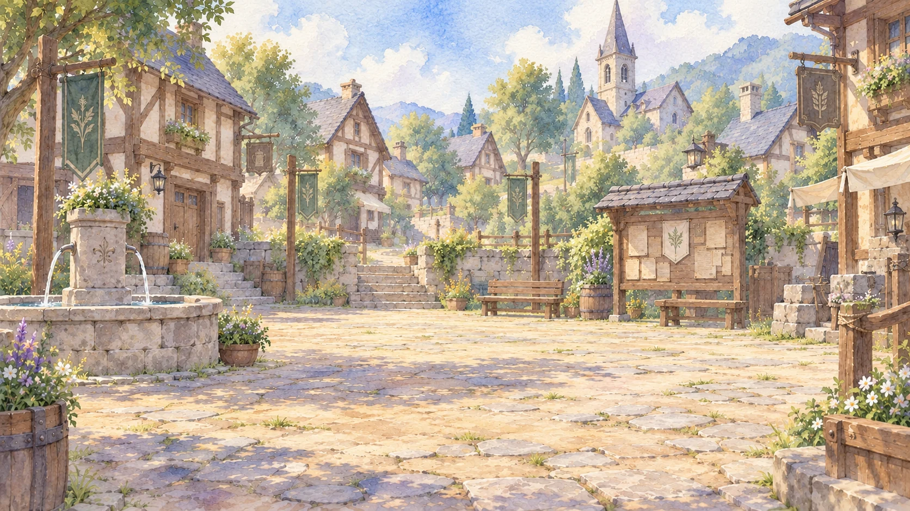
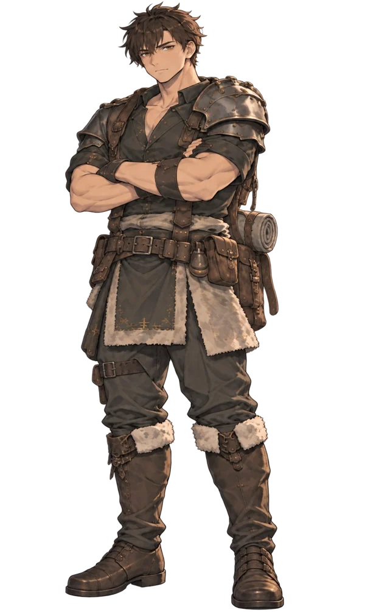
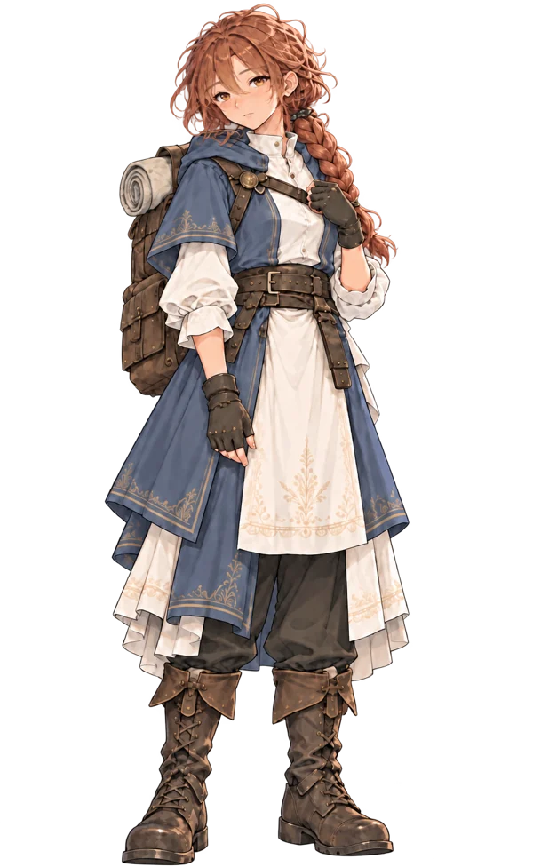

Tu lugar en la historia
Kael
Un joven de Aldenbrock. Tú eliges su nombre, su arma y cómo responde a las personas que encuentra.
RPG narrativo · en español
Una aventura para encariñarte
con quienes van contigo.
Explora un pueblo, pelea junto a tus compañeros y encuentra tu lugar en un mundo que todavía tiene mucho por contarte.
01 / El viaje
En Braviestale eres Kael. Tu historia comienza en Aldenbrock, entre casas conocidas, una forja y caminos que se adentran en el bosque.
Habla con sus habitantes, elige tu arma y reúne un grupo. Habrá combates que exijan pensar en equipo, conversaciones que cambien una relación y momentos en los que querrás quedarte un rato más.

El primer lugar que aprenderás a llamar hogar.
02 / Compañeros de camino
Cada uno llega con su carácter,
sus dudas y algo que aprender.
Tu lugar en la historia
Un joven de Aldenbrock. Tú eliges su nombre, su arma y cómo responde a las personas que encuentra.
Una amiga de antes del viaje
Atenta, inteligente y capaz de decirte las cosas de frente. Aprender a cuidar de otros también la cambia a ella.

Valor que se aprende
Entrena, se equivoca y vuelve a intentarlo. Tras sus bromas hay alguien que quiere estar a la altura de sus amigos.

La calma después del golpe
Conoce la medicina de campo. Antes de celebrar una victoria, prefiere comprobar que todos sigan en pie.
03 / Dentro de Braviestale
Una pelea. Una confesión.
Un apunte. Un camino por descubrir.
La fuerza del grupo
Kael, Mira y Wren frente a Gorrak. Elige cuándo atacar, defenderte o ayudar a un compañero. Cada turno cuenta.
Combate por turnos · ColiseoLo que cuesta decir
«Quiero estar contigo, Mira.»
El puerto de Ballenar, una conversación a solas y dos personas que se conocen desde antes de salir al camino.
Ballenar de noche · escena de presentaciónEl diario de campo
Kael escribe la descripción de cada criatura y conserva las palabras de sus compañeros como citas.
Vista de presentación con citas de Mira y Dorian.Aldenbrock, paso a paso
Ubica las casas, revisa por dónde seguir y vuelve a los lugares que ya conoces.
04 / Empieza tu historia
La demo está en español y llega hasta el enfrentamiento con Destigio en Ciudadela.
Sin cuenta ni conexión permanente para jugar.
Elige tu versión, extrae la carpeta y abre el juego.
Demo v0.1.3 · 698 MiB · ZIP
Demo v0.1.3 · 691 MiB · TAR.BZ2
¿Ya jugaste? Cuéntame qué te gustó y qué cambiarías.
Enviar comentariosElige Windows o Linux según tu equipo.
No necesitas una cuenta de GitHub.
Windows: clic derecho al ZIP → «Extraer todo».
Linux: extrae el archivo TAR.BZ2.
Windows: Braviestale.exe.
Linux: Braviestale.sh. Pulsa «Comenzar» y escribe tu nombre.
Clic o Enter para avanzar los diálogos · Esc para el menú · El manual del juego explica los atributos y las primeras acciones.
El recorrido desde Aldenbrock hasta el ataque a Ciudadela y el combate contra Destigio, al cumplirse los 30 días en la ciudad. Incluye exploración, compañeros, misiones, combate por turnos, diario y guardado. Es una versión de prueba y seguimos ajustándola con los comentarios de quienes juegan.
De quien está construyendo este mundo
Braviestale sigue creciendo. Quiero que puedas conocer a su gente, entender cómo jugar y encontrar motivos para volver a sus caminos.
Si una conversación te gusta, un combate te cuesta o algo te confunde, cuéntamelo. Tus comentarios ayudan a darle forma a la siguiente versión.
«Romance quiet» · música de Braviestale